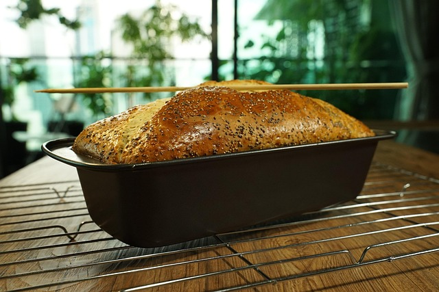

Banana Bread

Description
Banana bread is a type of bread made from mashed bananas. It is often a moist, sweet, cake-like quick bread.
Ingredients
- 3-4 ripe bananas, mashed
- 1/3 cup melted butter
- 1 teaspoon baking soda
- Pinch of salt
- 3/4 cup sugar
- 1 large egg, beaten
- 1 teaspoon vanilla extract
- 1 1/2 cups all-purpose flour
Steps
- Preheat the oven to 350°F (175°C), and butter a 4x8 inch loaf pan.
- In a mixing bowl, mash the ripe bananas with a fork until smooth. Stir the melted butter into the mashed bananas.
- Mix in the baking soda and salt. Stir in the sugar, beaten egg, and vanilla extract. Mix in the flour.
- Pour the batter into your prepared loaf pan. Bake for 60-65 minutes (check at 50 minutes) or until a tester inserted into the center comes out clean.
- Remove from oven and let cool in the pan for a few minutes. Then remove the banana bread from the pan and let cool completely before slicing.
Home